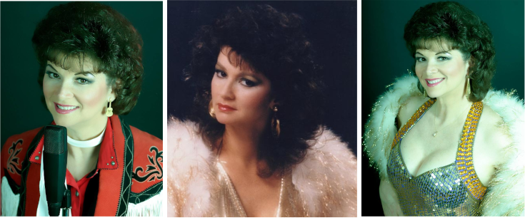

Carolyn Cline is a world-class performer who has traveled the world performing her unique and exciting show. She is a veteran of Las Vegas, Hollywood, and New York. Carolyn has also performed internationally in Tokyo, Japan, Bangkok, Thailand, Manila, Philippines, and Papeete, Tahiti are just a few. Having been in the entertainment business for over thirty years, Carolyn has appeared with such megastars as Bob Hope, Red Skeleton, Liberace, Tony Orlando, Lee Greenwood, and Les Elgart's Orchestra. She is a talented and versatile performer who plays a variety of instruments including the piano, organ, guitar, banjo, mandolin, flute, violin, and drums. Carolyn is a musician, singer, opening act, entertainer, and composer. She has earned a Bachelor of Music Degree and a Master of Arts Degree in Music Education. Carolyn also sings a tribute to her late great cousin Patsy Cline. Here are the memories of a talented entertainer named Patsy Cline from Winchester, Virginia, who still manages to capture the hearts of everyone through Carolyn Cline's voice, phrasing, and style to an unforgettable artist.
Carolyn Cline playing the piano.
